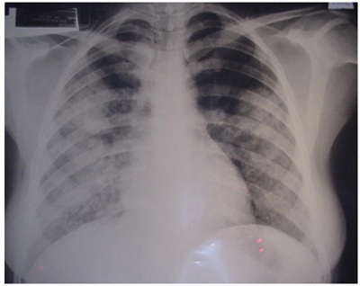
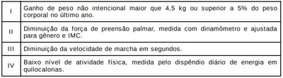
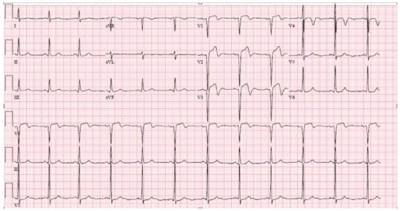
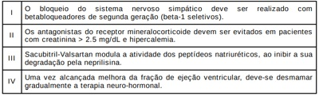
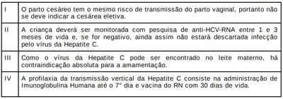
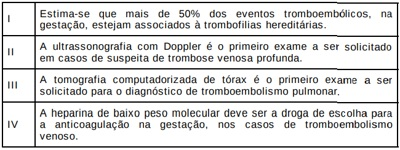
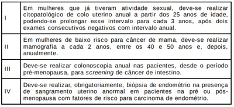

Questão 1 · Medicina Preventiva · 4000183944As ações de vigilância em saúde devem ser integradas nos cuidados rotineiros com as pessoas e suas comunidades, auxiliando nos processos de diagnóstico e de intervenção dos indivíduos e da coletividade. Uma das ações de vigilância fundamentais no trabalho da APS que envolve também outros níveis de atenção à saúde é a vigilância dos óbitos infantil e fetal. Uma das etapas do trabalho do comitê de vigilância desses casos é a
A discussão do caso com as pessoas das equipes de saúde envolvidas, para uma análise detalhada dos fatos e punição dos possíveis culpados.
B investigação de dados do atendimento à gestante e à criança, com entrevista domiciliar e levantamento de dados dos serviços de saúde.
C identificação de medidas de prevenção e penalidades direcionadas para o profissional e/ou a equipe envolvidos no caso.
D análise da evitabilidade do óbito com discussão ampla do caso e enfoque nos erros cometidos pela equipe ou atribuídos a cada profissional.
Questão 2 · Medicina Preventiva · 4000183943Diante de um caso de dor torácica, para avaliar a necessidade de solicitar exames complementares, é importante considerar a probabilidade pré-teste de doença coronariana, conforme mostra o quadro abaixo. Diamond G.A., Forres ter J .S. Analy s is of probability as an aid in the c linical diagnos is of coronary -artery disease. The New England Journal of Medic ine, Waltham, 1979. [Adaptado] Posto isso, a situação clínica em que a solicitação de um teste ergométrico está melhor indicada para confirmar o diagnóstico de doença coronariana é:
A mulher, 35 anos, tabagista, com episódio de dor torácica subesternal em pontadas por cerca de 1 minuto ao voltar para casa após sair da academia.
B homem, 50 anos, com episódio de dor torácica precordial ao subir 2 lances de escadas, apresenta piora da dor ao respirar e cessa rapidamente ao interromper o exercício.
C homem, 48 anos, com episódio de dor torácica subesternal ao carregar um armário pelas escadas até o terceiro andar, apresenta melhora da dor após 10 minutos.
D mulher, 57 anos, com dor torácica retroesternal com duração aproximada de 3 minutos ao deitar para assistir televisão após jantar.
Questão 3 · Medicina Preventiva · 4000183942Ao nal de 2010, como fruto de um grande acordo tripartite envolvendo Ministério da Sau publicada a Portaria no 4.279, de 30 de dezembro de 2010, que estabelece diretrizes para organizac Atenc ac ̧ o ̃ es e servic logi ́ stico e de gesta pactuação:
A Rede de Atenc
B Rede Cegonha, Rede de Cuidado a
C Rede de Prevenção e Tratamento de Feridas Crônicas, Rede de Atenção às Doenças Infectocontagiosas e Rede de Saúde Bucal.
D Rede de Atenção à Criança e ao Adolescente, Rede de Atenção ao Idoso e Rede de Atenção Materno- infantil.
Questão 4 · Medicina Preventiva · 4000183941O e-SUS Atenção Primária (e-SUS APS) é uma estratégia para reestruturar as informações da Atenção Primária em nível nacional. Essa ação está alinhada com a proposta mais geral de reestruturação dos Sistemas de Informação em Saúde do Ministério da Saúde, entendendo que a quali cação da gestão da informação é fundamental para ampliar a qualidade no atendimento à população. Diante disso, no momento atual, por meio da implantação do Prontuário Eletrônico do Cidadão (PEC), é possível
A compartilhar informações registradas em serviços de urgência e emergência com as unidades básicas de saúde.
B realizar o registro de dados para indicadores de saúde na APS e utilizar o Código Internacional de Doenças na Atenção Primária (CIAP).
C encaminhar paciente para outros níveis de atenção à saúde realizando interface com o Sistema Nacional de Regulação (SISREG).
D anexar arquivos, como o prontuário físico digitalizado do paciente e sua família, de forma a não perder dados registrados manualmente até então.
Questão 5 · Medicina Preventiva · 4000183940O Ministério da Saúde apresentou, no ano de 2022, uma atualização revisada dos sete indicadores que compõem o Pagamento por Desempenho da Atenção Primária à Saúde, conforme disposto pela Portaria GM/MS 102, de 20 de janeiro de 2022. Sendo assim, os indicadores foram ajustados para atender às Ações Estratégicas de programas como Prénatal e Saúde da Mulher. Faz parte desses indicadores de saúde a proporção de
A mulheres com coleta anual de citopatológico na Atenção Primária à Saúde.
B gestantes com, pelo menos, seis consultas pré-natal realizadas, sendo a 1ª até a 12ª semana de gestação.
C gestantes com realização de exames para sífilis, HIV e toxoplasmose.
D mulheres em idade fértil e de gestantes com atendimento odontológico realizado na Atenção Primária à Saúde.
Questão 6 · Medicina Preventiva · 4000183939Helen é uma médica de família recém-egressa da residência médica e vai começar a trabalhar na APS do município de Lagoa Azul. Em sua primeira reunião de equipe, questionaram-na sobre como gostaria de organizar a sua agenda semanal para atendimento à comunidade, considerando que o território possui bastante demanda reprimida (a equipe encontrava-se sem médico há quase 1 ano) e existe uma forte pressão assistencial de uma população composta, em sua maioria, por adultos jovens, além da demanda sempre presente de renovações de prescrições de psicofármacos. Em uma nova reunião, Helen questionou a equipe sobre a existência de espaços colegiados de discussão com a comunidade sobre o trabalho das equipes de saúde e os problemas mais frequentes no território. Por meio desse questionamento, a médica estava buscando saber mais informações sobre a diretriz do SUS conhecida por
A participação popular.
B equidade.
C orientação comunitária.
D integralidade.
Questão 7 · Medicina Preventiva · 4000183938Helen é uma médica de família recém-egressa da residência médica e vai começar a trabalhar na APS do município de Lagoa Azul. Em sua primeira reunião de equipe, questionaram-na sobre como gostaria de organizar a sua agenda semanal para atendimento à comunidade, considerando que o território possui bastante demanda reprimida (a equipe encontrava-se sem médico há quase 1 ano) e existe uma forte pressão assistencial de uma população composta, em sua maioria, por adultos jovens, além da demanda sempre presente de renovações de prescrições de psicofármacos. Ao nal da primeira semana de trabalho, os agentes de saúde comunicaram à Helen que a comunidade estava muito satisfeita com a chegada dela na equipe e a acharam muito respeitosa e compreensiva. Também estavam surpresos com a diversidade de problemas que a médica conseguia manejar sem a necessidade de encaminhamentos para outros serviços. Diante disso, percebe-se a ilustração dos seguintes princípios da Medicina de Família e Comunidade:
A os pacientes devem ser abordados de forma integral considerando as suas experiências sobre a doença; e a atuação do MFC é influenciada pela comunidade.
B o médico de família e comunidade (MFC) é um clínico qualificado; e a relação médico-pessoa é fundamental para o desempenho do MFC.
C as pessoas necessitam do MFC como coordenador do seu cuidado; e o acesso às consultas deve ser garantido.
D o MFC é o recurso de uma população definida; e o trabalho em equipe multidisciplinar é fundamental para a atuação do MFC.
Questão 8 · Medicina Preventiva · 4000183937Helen é uma médica de família recém-egressa da residência médica e vai começar a trabalhar na APS do município de Lagoa Azul. Em sua primeira reunião de equipe, questionaram-na sobre como gostaria de organizar a sua agenda semanal para atendimento à comunidade, considerando que o território possui bastante demanda reprimida (a equipe encontrava-se sem médico há quase 1 ano) e existe uma forte pressão assistencial de uma população composta, em sua maioria, por adultos jovens, além da demanda sempre presente de renovações de prescrições de psicofármacos. Conforme o trabalho na Estratégia Saúde da Família, uma forma mais adequada para a organização da agenda de Helen é
A organizar momentos de atividades coletivas para renovação de receitas em, pelo menos, um turno por semana, como forma de educar a população a não procurar outros horários que devem ser destinados às demais demandas.
B organizar a agenda de forma a realizar atendimentos programados pela manhã e visitas domiciliares nos turnos da tarde, em conjunto com toda a equipe, como forma de conhecer o território e aumentar o vínculo com os profissionais dessa equipe.
C oferecer agendamento de consultas com turnos definidos conforme ações programáticas, como, por exemplo, HIPERDIA, pré-natal, puericultura, saúde do idoso, deixando um dia da semana para livre demanda.
D ofertar agendamento de consultas programadas para priorizar o público de gestantes e as crianças menores de 2 anos e oferecer mais vagas para demanda espontânea para esse momento.
Questão 9 · Medicina Preventiva · 4000183936O Programa Saúde na Hora foi lançado pela Secretaria de Atenção Primária à Saúde do Ministério da Saúde (SAPS/MS) em maio de 2019 e passou por atualizações com a publicação da Portaria nº 397/GM/MS, de 16 de março de 2020. Esse programa viabiliza o custeio aos municípios e ao Distrito Federal para implantar o horário estendido de funcionamento das Unidades de Saúde da Família (USF) e Unidades Básicas de Saúde (UBS) em todo o território brasileiro. Considerando os atributos da Atenção Primária à Saúde, o programa também prevê
A reduzir a quantidade de equipes da Estratégia Saúde da Família nos municípios, visto que o atributo do acesso estará sendo garantido pelo funcionamento dos serviços em horário estendido e, até mesmo, nos finais de semana por meio de escalas com horários mais flexíveis para os profissionais.
B dar suporte aos municípios e ao Distrito Federal para o enfrentamento da Emergência de Saúde Pública de Importância Internacional causada pelo novo agente coronavírus (2019-nCoV), proporcionando a integralidade com um atendimento mais resolutivo.
C ofertar ações de saúde em horários mais flexíveis para a população, como horários noturno e do almoço, mas esse formato traz prejuízo ao atributo da coordenação do cuidado pela descaracterização do trabalho nas linhas de cuidado.
D diminuir filas em unidades de pronto atendimento e emergências hospitalares, direcionando os pacientes com baixa gravidade clínica para o atendimento nas unidades básicas, mas inviabilizando o atributo da longitudinalidade do acompanhamento desses casos.
Questão 10 · Medicina Preventiva · 4000183935Diane, 26 anos, comparece à consulta com queixas de disúria e polaciúria há 2 dias. O médico que a atendeu cou com dúvidas a respeito da con abilidade dos dados da história para definir o diagnóstico de cistite, ou se seriam necessários exames complementares, como EAS e urocultura. Fez uma busca na internet e encontrou um artigo mencionando que a combinação de disúria, polaciúria e ausência de corrimento vaginal tem um valor preditivo positivo (VPP) para cistite de 90%. Diante disso, o médico concluiu que poderia iniciar o tratamento para cistite
A após urocultura, visto que a sensibilidade desse teste seria de 90% e daria mais segurança à cobertura antibiótica.
B após realização do EAS e da urocultura, visto que a especificidade desses testes conjugados seria de 90% para cistite.
C de imediato e empiricamente, visto que a incidência de casos de cistite em mulheres jovens é de 90% na população brasileira.
D de imediato e empiricamente, visto que a probabilidade pré-teste para cistite nesse caso é bem considerável.
Questão 11 · Hérnia Umbilical · Cirurgia · 4000183934Jonathan, 2 anos, é levado para consulta de puericultura. Sua mãe, Rosa, relata estar preocupada, pois a vizinha falou que Jonathan precisa operar a hérnia “de umbigo”. A criança está assintomática. Ao exame físico do abdome, evidencia-se um anel herniário 2 cm de diâmetro, com protuberância reduzida facilmente à manipulação. Demais exames estão normais. Diante desse quadro, o médico deve
A orientar sobre a benignidade do quadro, sugerindo à família utilizar faixas ou cintas abdominais para terapia de compressão.
B solicitar a ultrassonografia de parede abdominal, para melhor classificação e indicação de tratamento adequado.
C encaminhar a criança ao especialista para tratamento cirúrgico, considerando que ela tem 2 anos e ainda apresenta hérnia de 2 cm.
D manter o acompanhamento na APS, avaliando se haverá redução em até um ano, pois não é necessário outro tipo de tratamento.
Questão 12 · Medicina Preventiva · 4000183933Educação Popular em Saúde é uma prática que tem a potencialidade de proporcionar autonomia das pessoas nas suas atividades de cuidado em saúde. Essa prática
A é considerada como o produto de formulações teóricas da educação aplicadas à saúde e como instrumento para a luta social de vários sujeitos articulados em vários movimentos sociais, disputando os rumos das políticas sociais.
B toma como ponto de partida os saberes prévios dos profissionais de saúde, realizando uma aposta pedagógica na ampliação progressiva da análise crítica da realidade por parte dos profissionais, à proporção que eles sejam produtores de sua própria história.
C traduz-se como um modo de ensino que possibilita às pessoas de determinada comunidade mudarem seus hábitos de vida para assimilarem práticas higiênicas e recomendações médicas, evitando o desenvolvimento de doenças.
D é definida como o ensino da saúde para classes populares, o qual toma como balizadores ético-políticos os interesses das classes populares, cada vez mais heterogêneas, não tendo relação com a luta de movimentos sociais.
Questão 13 · Medicina Preventiva · 4000183932João Paulo, médico recém-formado, começou a trabalhar em uma UBS de sua cidade, no interior do Rio Grande do Norte. Logo nos primeiros dias de atendimento, cou muito preocupado com a grande quantidade de pacientes e solicitou uma reunião de equipe para discutir a gestão da clínica. Nessa reunião, João Paulo deve argumentar que é importante
A aumentar o número de ações de promoção de saúde com a participação do médico, que não deveria ficar tanto tempo no consultório.
B priorizar as atividades programáticas do Ministério da Saúde, protegendo a agenda para os grupos que mais necessitam.
C limitar o número de consultas por dia, possibilitando atendimentos mais demorados e uma clínica ampliada.
D buscar conhecer a demanda para uma melhor organização da agenda de acordo com as necessidades da comunidade.
Questão 14 · Tratamento da Depressão · Depressão · 4000183931Valéria, 21 anos, desempregada, solteira, relata quadro de angústia e tristeza diária iniciado há 5 meses, após o falecimento de seus pais devido à COVID-19. Refere falta de vontade para realizar suas atividades diárias, crises de choro, sono excessivo, falta de perspectiva para o futuro. Relata que tem vontade de sumir, mas nega pensamentos de morte ou de autoagressão. Apresenta rede de apoio fragilizada, já que seus familiares moram em outro estado. Nesse caso, a melhor conduta é iniciar
A fluoxetina 20 mg e encaminhar para o psicólogo.
B lítio 300 mg, duas vezes ao dia, e encaminhar para o CAPS.
C amitriptilina 25 mg e encaminhar para o psiquiatra.
D práticas integrativas e complementares.
Questão 15 · Inf ectologia · 4000183930A tuberculose é uma doença que tem tratamento e pode ser prevenida, mas ainda tem prevalência, principalmente, em populações com elevada vulnerabilidade social. Para quebrar a cadeia de transmissão da doença, o diagnóstico precoce é fundamental. Nesse contexto,
A a busca ativa de sintomáticos respiratórios é responsabilidade apenas do nível primário de saúde e deve ser realizada em visitas domiciliares.
B o agente comunitário de saúde é o único profissional responsável por realizar a busca dos contatos de pacientes em seus domicílios.
C o nível secundário de saúde é responsável pela busca de contatos e pelo tratamento dos pacientes positivos.
D a visita domiciliar para avaliação deve ser agendada, caso os contatos não compareçam à unidade de saúde após convite.
Questão 16 · Medicina Preventiva · 4000183929As ferramentas de abordagem familiar permitem ao médico de família e comunidade aproximar-se das famílias e intervir, de forma mais adequada, nas diversas situações. O genograma, uma dessas ferramentas,
A preconiza que se evite questionamento às informações médicas, já que, geralmente, as pessoas consideram esse assunto ameaçador.
B é uma representação gráfica das gerações de uma família, utilizado apenas como método diagnóstico.
C é um instrumento que pode ser utilizado como intervenção terapêutica.
D preconiza que se evite a participação das crianças, pois elas ainda não têm maturidade para discutir sobre as relações familiares.
Questão 17 · Obstetrícia · 4000183928Jeane, 33 anos, casada, comparece à UBS para realizar a segunda consulta de pré-natal. Refere que a data de sua última menstruação foi dia 15/08/22. Relata estar sem queixas e diz ter trazido o resultado dos exames solicitados na primeira consulta. Ao avaliar os exames, o médico verifica os seguintes resultados: ABO-RH: A+; hematócrito: 39%; toxoplasmose: IgG positivo e IgM negativo; glicemia: 93 mg/dl; EAS: sem alterações. Diante desse quadro, o médico deve
A informar que a glicemia está normal, e a paciente deve retornar para consulta com 1 mês.
B direcionar a paciente para consulta com o endocrinologista e orientar dieta com restrição de açúcares.
C encaminhar a paciente para o pré-natal de alto risco e orientar intervenções no estilo de vida.
D solicitar à paciente o teste oral de tolerância à glicose, pois pode se tratar de diabetes gestacional.
Questão 18 · Medicina Preventiva · 4000183927O Método Clínico Centrado na Pessoa (MCCP) é uma abordagem que tem amplo potencial de melhorar a qualidade assistencial, possibilitando um aumento da satisfação das pessoas e dos médicos, uma melhor adesão aos tratamentos e a diminuição das queixas decorrentes de má prática. O MCCP divide-se em 4 componentes. Considerando esses componentes,
A o segundo consiste em intensificar a relação médico-pessoa, não tendo relação com o processo terapêutico.
B o segundo consiste em elaborar um plano em conjunto de manejo dos problemas, priorizando a integralidade do cuidado.
C o primeiro consiste em explorar os sentimentos e as expectativas da pessoa sobre o tratamento, evitando a transferência e a contratransferência entre a pessoa e o profissional.
D o primeiro consiste em explorar a saúde, a doença e a experiência sobre a doença”, abordando sentimentos, ideias, funcionalidades e expectativas da pessoa.
Questão 19 · Inf ectologia · 4000183926Iandara comparece à consulta médica com queixa de tosse há 10 dias. Ela nega outros sintomas, mas diz haver outras pessoas com tosse em sua comunidade. Iandara é indígena, pertencente à comunidade Sagi-Trabanda, em Baía Formosa/RN. Não apresenta alterações no exame físico. Nesse caso, a médica assistente deve
A solicitar TRM para tuberculose e cultura do escarro.
B requerer radiografia de tórax PA e perfil.
C prescrever um mucolítico e orientar aumentar a ingesta líquida.
D prescrever um bloqueador central da tosse e solicitar TR para Covid-19.
Questão 20 · Medicina Preventiva · 4000183925José, 82 anos, comparece à consulta de cuidado programado/continuado na UBS de seu bairro para solicitar a renovação da receita das suas medicações. A médica de família e comunidade, Sara, nova na equipe, faz anamnese e exame físico detalhados e ca apreensiva em relação às medicações utilizadas pelo paciente. José é hipertenso e diabético, ex-tabagista há 10 anos e relata que, desde antes da pandemia, não realiza exames de rotina, por medo de contrair o coronavírus. Porém, relata estar bem, apenas “cansado pela idade”. Está em uso de losartana 50 mg duas vezes ao dia, anlodipino 5 mg uma vez ao dia, metformina 850 mg duas vezes ao dia e omeprazol 20 mg uma vez ao dia. A médica verifica a PA, que está 110x70 mmHg. Demais exames realizados estão todos sem alterações. Ela solicita os exames laboratoriais, mas resolve já iniciar a otimização dessas medicações, já que se preocupa com a prevenção quaternária. Diante desse quadro, a médica deve
A deve suspender o anlodipino 5 mg, já que é um medicamento contraindicado para idosos.
B tentar suspender o omeprazol e orientar sobre hábitos alimentares.
C manter as medicações até a avaliação dos exames solicitados.
D associar a sinvastatina 40 mg, já que o risco cardiovascular do paciente é alto.
Revisar: possível letra faltando em enunciado
Questão 21 · Enteroscopia · 4000183924Paciente de 60 anos, sexo masculino, apresenta quadro de melena há 3 meses, tendo recebido múltiplas transfusões de sangue nesse período. Realizou investigação endoscopia digestiva alta e colonoscopia, que não demonstraram alterações significativas, e cintilogra a com hemácias marcadas, que sugeriu provável sangramento com origem no intestino delgado. Diante desse quadro, a melhor conduta diagnóstica e terapêutica é
A cápsula endoscópica.
B enteroscopia intraoperatória.
C laparotomia exploradora.
D arteriografia mesentérica.
Questão 22 · Contraindicações · 4000183923A oxigenoterapia hiperbárica é uma terapia complementar usada no manejo de feridas hipóxicas e, assim como a maioria dos tratamentos usados na prática médica, possui complicações e contraindicações, como
A toxicidade hepática por oxigênio e uso de dissulfiram.
B pneumotórax e uso de doxorrubicina.
C miopia transitória e uso de diazepam.
D barotrauma do ouvido interno e uso de bleomicina.
Questão 23 · Trauma da Genitália Externa · Cirurgia · 4000183922Paciente de 35 anos dá entrada no pronto-socorro e relata que estava praticando relação sexual vigorosa quando houve a ocorrência de estalo seguido de dor e intumescência no pênis. Ao exame, apresenta hematoma com deformidade “em berinjela”, acompanhada de sangue no meato uretral. Nesse caso, a conduta mais recomendada é realizar
A reparo cirúrgico do corpo cavernoso.
B aspiração do hematoma com agulha calibrosa.
C prescrição de gelo e anti-inflamatórios.
D passagem de prótese peniana.
Questão 24 · Apresentação Clínica e Diagnóstico · Tratamento · Cirurgia · 4000183921O médico de uma UPA atende a uma paciente com 45 anos, diabética, com quadro de dor em região perianal há três dias, massa endurecida e tenesmo retal. A paciente havia sido atendida em uma UBS e estava em uso de analgésico e anti- inflamatório, sem melhora. O exame físico mostra abaulamento e hiperemia de regiões perianal e isquiorretal à direita. Para esse caso, a conduta mais indicada é
A drenagem cirúrgica imediata e antibioticoterapia.
B hemorroidectomia convencional imediatamente.
C manutenção de anti-inflamatórios e associar venotônicos.
D antibioticoterapia de amplo espectro e calor local.
Questão 25 · Complicações · Cirurgia · 4000183920Paciente submetida à cirurgia bariátrica há 10 anos, com perda sustentada de 80% do excesso de peso, apresenta quadro de dor abdominal de início súbito associada a náuseas e vômitos. Ao exame físico, apresenta-se eupneica, hidratada e normocorada. O exame ainda revela FC = 100 bpm e PA = 130 X 90 mmHg; abdome plano, ácido e doloroso à palpação profunda, sem sinais de irritação peritoneal. O médico plantonista solicita uma tomogra a computadorizada do abdome que demonstra agrupamento de alças de intestino delgado no quadrante superior esquerdo com ingurgitamento dos vasos mesentéricos e distensão do estômago excluso. A complicação descrita é característica da técnica de
A gastroplastia endoscópica.
B bypass gástrico em Y de Roux.
C gastrectomia vertical.
D banda gástrica ajustável.
Questão 26 · Aneurisma de Aorta Abdominal · Outros · Fatores de Risco · 4000183919O aneurisma de aorta é a dilatação da parede da aorta que tem como principal complicação o seu rompimento. O principal fator de risco para esse aneurisma é
A hipertensão arterial.
B hereditariedade.
C tabagismo.
D diabetes.
Questão 27 · Avaliação de Via Nutricional · Cirurgia · Indicações de Suporte Nutricional · 4000183918Paciente de 70 anos, portador de megaesôfago idiopático avançado, é encaminhado ao ambulatório de cirurgia para tratamento cirúrgico. Esse paciente apresenta disfagia até para líquidos e teve perda de 20% do peso corporal nos últimos 6 meses. Além disso, é candidato à esofagectomia. Nessa situação, a melhor conduta nutricional, no préoperatório, é a
A colocação de gastrostomia e nutrição ambulatorial por 45 dias.
B passagem de sonda enteral por endoscopia e nutrição por 7-14 dias.
C suplementação oral ambulatorial por 3 a 5 dias.
D colocação de cateter venoso central e nutrição parenteral por 30 dias.
Questão 28 · Tratamento · Cirurgia · 4000183917Numa situação de um trauma abdominal, foi indicada uma laparotomia exploradora. Esse procedimento consiste em uma técnica padrão, com etapas que devem ser realizadas na seguinte sequência: 1 - Abertura da parede do xifóide até a sín se púbica; 2 - Exposição por meio de um afastador xo; 3 - Colocação de compressas nos quatro quadrantes; 4 - Avaliação do trato gastrintestinal da junção esofagogástrica até o reto proximal na reflexão peritoneal; 5 - Acesso à retrocavidade para visualização da face posterior do estômago e do pâncreas; 6 - Evidenciação e classificação das lesões; e 7 - Instituição do tratamento adequado. Após a avaliação do estágio da lesão (etapa 6) e do estado clínico do paciente, deve ser instituído o tratamento (etapa 7). Um exemplo de correlação correta entre órgão lesado e tratamento adequado está na
A lesão hepática, que deve ser conduzida sempre de forma conservadora.
B lesão duodenal perfurativa, que requer sempre desbridamento amplo e rafia.
C lesão gástrica, que deve ser tratada com patch de omento apenas nos pacientes instáveis.
D lesão esplênica, que requer esplenectomia de urgência apenas nos pacientes instáveis.
Questão 29 · Classif icação dos Enxertos de Pele Quanto ao Doador · Enxertia Cutânea · Cirurgia · 4000183916Na cicatrização das feridas, muitas vezes, são usados curativos escolhidos conforme as condições especí cas de cada ferida. A esse respeito,
A a espuma é um tipo curativo absortivo.
B o aloenxerto é um tipo de curativo não biológico.
C o âmnio é um curativo derivado de placenta animal.
D a gaze de malha é considerada um curativo oclusivo.
Revisar: possível letra faltando em enunciado
Questão 30 · Estadiamento · Carcinoma de Células Escamosas CEC · 4000183915Tratamento do Câncer do Esôf ago e da Transição Esof agoGástrica Paciente de 70 anos, tabagista, com passado de etilismo, apresenta disfagia progressiva há 6 meses acompanhada de perda de 15% do peso corporal. Procura o médico na Unidade Básica de saúde, que solicita endoscopia digestiva alta, a qual demonstra lesão vegetante a 25 cm da arcada dentária superior, ocupando 70% da luz esofágica que foi biopsiada. A biópsia apresenta como resultado carcinoma de células escamosas do esôfago. Sabendo que, durante o estadiamento, não houve evidência de comprometimento linfonodal, metástases e nem invasão de órgão adjacentes, (T3N0M0), a conduta mais adequada é
A esofagectomia seguida de tratamento adjuvante.
B esofagectomia radical em três campos.
C quimioterapia + radioterapia exclusiva.
D quimioterapia + radioterapia neoadjuvante.
Questão 31 · Lesões de Extremidades com Risco Potencial à Vida · Lesões que Colocam o Membro em Risco · 4000183914Cirurgia Um paciente foi vítima de atropelamento por veículo automotor, com trauma extenso de partes moles no membro inferior. Para esse caso, a conduta mais adequada é
A lavar vigorosamente a lesão, realizar desbridamento conservador e profilaxia antitetânica nas primeiras 12 horas.
B tratar localmente a lesão do membro se tiver fratura associada à perda de substância, antes da aplicação do protocolo ABCDE.
C empregar enxertos de pele para cobertura cutânea, na existência de exposição óssea.
D reparar perdas de substância extensas em, no máximo, 24 horas após a lesão.
Questão 32 · Tamponamento Cardíaco · Cirurgia · 4000183913Paciente é levado ao pronto-socorro pelo serviço de atendimento móvel de urgência, devido a acidente por arma branca transfixante do mediastino. Durante o atendimento inicial, o paciente apresenta parada cardíaca sem pulso. Nessa situação, a conduta mais adequada é realizar
A toracotomia de urgência no centro cirúrgico.
B drenagem torácica e reposição volêmica.
C toracotomia de emergência na sala de trauma.
D programação cirúrgica após reanimação e exames de imagem.
Questão 33 · Cirurgia · Hipotermia · 4000183912Pacientes cirúrgicos estão suscetíveis a infecções de sítio cirúrgico e nosocomiais que podem ser prevenidas ou reduzidas quando há um empenho da equipe cirúrgica. Nesse sentido, uma condição que pode desfavorecer o desfecho cirúrgico no pós-operatório é
A a hipovolemia, pois gera imunossupressão, aumentando a mortalidade após o trauma cirúrgico, podendo ser agravada com o uso de cristaloides.
B a hipóxia, pois gera imunossupressão, aumentando a mortalidade após o trauma cirúrgico, podendo ser agravada sem o uso de oxigênio nas cirurgias eletivas.
C a hipotermia, pois gera imunossupressão, aumentando a mortalidade após o trauma cirúrgico, podendo ser agravada sem o uso de manta térmica.
D a hiperglicemia, pois gera imunossupressão, aumentando a mortalidade após o trauma cirúrgico, podendo ser agravada com glicemias < 200 mg/dL.
Questão 34 · Cirurgia · Trauma Renal · 4000183911Paciente de 22 anos, vítima de acidente motociclístico, dá entrada no pronto-socorro com Glasgow = 15. Está estável hemodinamicamente e apresenta hematúria e extenso hematoma em região lombar esquerda. Realiza uma tomogra a computadorizada do abdome que revela hematoma não expansivo perirrenal com laceração de 0,8 cm do córtex renal esquerda sem extravasamento de urina. O grau da lesão descrita e seu adequado tratamento são, respectivamente,
A II e nefrectomia parcial.
B III e passagem de cateter duplo “J”.
C III e drenagem percutânea do hematoma.
D II e tratamento conservador.
Questão 35 · Tromboembolismo Arterial · Cirurgia · 4000183910A oclusão arterial aguda de origem embólica é uma causa de doença arterial que pode levar à perda de um membro. Esse tipo de oclusão tem a sua fonte de origem e o local de impactação, respectivamente, em
A ventrículo esquerdo e artéria braquial distal.
B átrio esquerdo e trifurcação da poplítea.
C ventrículo esquerdo e carótidas.
D átrio esquerdo e bifurcação femoral.
Questão 36 · Exames Complementares Básicos · Cardiologia · 4000183909Na avaliação pré-anestésica do paciente que vai se submeter a uma cirurgia não cardíaca, usam-se normas baseadas nas orientações do dessas entidades para a avaliação complementar pré-operatória de pacientes que realizarão cirurgia não cardíaca, pode-se
A dispensar o eletrocardiograma de 12 derivações de rotina em pacientes assintomáticos que vão se submeter a procedimento cirúrgico de baixo risco.
B recomendar a investigação com angiografia de coronária de rotina nos pacientes com risco elevado e insatisfatória capacidade funcional.
C evitar o rastreio de rotina por meio de provas de esforço cardiopulmonar em pacientes que vão se submeter a procedimento cirúrgico de alto risco.
D indicar a avaliação da função do ventrículo esquerdo nos pacientes com risco elevado e excelente capacidade funcional.
Questão 37 · Tratamento Conservador x Tratamento Cirúrgico · Tratamento das Hérnias Inguinais · 4000183908Hérnias Complicadas Médico de plantão numa Unidade de Pronto Atendimento (UPA) atende a um paciente de 76 anos com dor abdominal há três dias, anorexia, náuseas, vômitos e parada na eliminação de gases e fezes, piorando nas últimas 24 h, e seguida de vômitos fecalóides. O paciente é hipertenso e faz uso de losartana. Ao exame clínico, está desidratado e descorado, apresentando TA (160 X 100 mmHg), FC = 110, SAT = 96% em ar ambiente. O abdômen está distendido, sem cicatrizes cirúrgicas, ruídos hidroaéreos débeis à palpação, bastante doloroso difusamente, com descompressão brusca positiva em fossas ilíacas. Há a presença de hérnia inguinal direita não redutível. O toque retal revela a ausência de fezes, as paredes retais com aspecto normal, a próstata aumentada e de consistência endurecida. Realizou exame radiológico simples no local que revelou alças intestinais com distensão e níveis hidroaéreos, ausência de fezes em ampola retal; hemograma = 15.000 leucócitos e desvio à esquerda e PCR= 160 mg/dl. Baseando-se no relato, avalie as afirmativas abaixo. Entre as afirmativas, estão corretas

A I e IV.
B I e II.
C III e IV.
D II e III.
Questão 38 · Cirurgia · Fratura de Esterno Costela e Escápula · 4000183907Paciente de 65 anos, vítima de queda de altura, sofreu fraturas de múltiplas costelas posteriores à esquerda, há cerca de 36 horas. Está em observação no pronto-socorro, há cerca de 24 horas, com queixa de dor respiratória dependente. As duas últimas imagens de radiogra as de tórax não mostram sinais de derrame pleural ou pneumotórax; porém, há fraturas do 3º ao 8º arcos costais à esquerda. Sem uso de oxigênio. Nesse caso, a conduta deve ser
A manutenção em observação por mais 24 horas.
B drenagem torácica à esquerda.
C alta hospitalar e analgesia.
D cirurgia para correção das fraturas costais.
Questão 39 · Via Aérea · Cirurgia · 4000183906Considere uma paciente de 35 anos, 55 kg de peso, previamente hígida, vítima de queimaduras de segundo grau nos dois membros inferiores, causadas por incêndio em ambiente fechado. Para essa paciente, a conduta mais adequada é
A sedar com fentanil, isoladamente ou associado a benzodiazepínico, para reduzir a ansiedade.
B realizar broncoscopia, se estiverem presentes escarro carbonáceo e queimadura das vibrissas nasais.
C hidratar nas primeiras 8 horas pós-queimadura com 1500 ml de solução de Ringer Lactato.
D calcular a hidratação venosa, considerando a superfície corporal queimada dessa paciente em 48%.
Questão 40 · Reparo laparoscópico · Cirurgia · 4000183905Paciente de 28 anos, sexo masculino, dá entrada no pronto-socorro com história de ser portador de abaulamento redutível na região inguinal direita há 2 anos. Alega que, depois de um esforço físico, o abaulamento tornou-se doloroso e irredutível há 12 h, acompanhando-se de dor abdominal difusa e vômitos. No exame físico, foi feito o diagnóstico de hérnia inguinal direita encarcerada. O paciente foi encaminhado à cirurgia. No momento da indução anestésica, com o relaxamento da parede abdominal, ocorreu redução espontânea do conteúdo herniário para a cavidade abdominal. Diante desse quadro, a melhor conduta é
A adiar a cirurgia para o dia seguinte.
B realizar videolaparoscopia.
C suspender o procedimento cirúrgico.
D corrigir a hérnia por via inguinal.
Questão 41 · Pneumologia · Cardiologia · 4000183904Paciente admitido na UTI, proveniente do PS, por quadro de choque séptico de foco urinário foi entubado, sob ventilação mecânica invasiva, em modo controlado, sem esforço ventilatório. É portador de DM tipo 2, ex-tabagista. Ainda no PS, recebeu 3.000 ml de ringer lactato, devido a sinais de má perfusão periférica e hiperlactatemia. A avaliação inicial evidenciava: tempo de enchimento capilar de aproximadamente 5 segundos, PA 88x40mmHg e lactato de 3 mmol/L. Considerando o quadro descrito, o benefício hemodinâmico de um bolus de cristaloide adicional é melhor representado por
A pressão venosa central de 8 mmHg.
B variação do volume sistólico de 7%.
C aumento do débito cardíaco de 15% após elevação passiva das pernas.
D pressão de oclusão da artéria pulmonar de 15 mmHg.
Questão 42 · Lombalgia · 4000183903Homem de 30 anos apresenta, há 5 dias, dor em região lombar à direita, sem irradiação para membros inferiores ou outros sintomas, após empurrar móveis e carregar alguns objetos durante reforma em seu apartamento. Refere sintomas semelhantes em outra ocasião anterior. No exame físico da coluna, o paciente apresenta discreta contratura paravertebral lombar à direita. Relata ainda dor à exão e discreta limitação desse movimento da coluna lombar. O exame neurológico dos membros inferiores é normal. O diagnóstico mais provável desse paciente é
A osteoartrite e deve ser feito com base em radiografia de coluna lombar.
B hérnia discal lombar e deve ser feito com base em ressonância nuclear magnética.
C lombalgia mecânica comum e deve ser feito com base na história clínica/exame físico.
D espondilite anquilosante e deve ser feito com base em tomografia computadorizada.
Questão 43 · Classif icação de risco · Pneumologia · 4000183902Homem de 70 anos, obeso e hipertenso, apresentou dispneia súbita, dor torácica e palpitações, três dias após uma cirurgia para correção de fratura no colo do fêmur direito. Uma angiotomogra a computadorizada de tórax foi compatível com tromboembolia pulmonar aguda (TEP). Estava hemodinamicamente estável, sem disfunção de ventrículo direito pelo ecocardiograma, mas com troponina elevada. De acordo com o PESI (Pulmonary Embolism Severity Index), apresentou PESI III Quanto à severidade da TEP e o risco de morte em 30 dias, esse paciente deve ser classificado como TEP de risco
A alto.
B intermediário baixo.
C baixo.
D intermediário alto.
Questão 44 · Tratamento · Classif icação · Pneumologia · 4000183901Homem de 60 anos, tabagista há 30 anos (20 cigarros/dia), refere dispneia, quando sobe ladeiras ou escadas, e tosse matutina com pouca secreção há, aproximadamente, dois anos. Não costuma ter exacerbações, mas, há seis meses, necessitou de internação hospitalar em enfermaria por 10 dias. Atualmente, apresenta índice de dispneia 1 pela escala de dispneia do MRC – ( 95 eosinó los, e a espirometria evidenciou: VEF1/CVF < 70% pós-BD e VEF1 = 40%, sendo diagnosticado com doença pulmonar obstrutiva crônica (DPOC). Considerando as siglas SABA ( ( anticolinérgico de longa duração classificação e o tratamento farmacológico inicial desse paciente são, respectivamente,
A DPOC tipo C / LAMA.
B DPOC tipo A / LAMA ou LABA.
C DPOC tipo C / LAMA + LABA.
D DPOC tipo A / SABA.
Questão 45 · Otorrinolaringologia · 4000183900Paciente do sexo masculino, 55 anos, observou, há três meses, linfonodomegalia cervical. Realizou tomogra a computadorizada de pescoço que evidenciou lesão in ltrativa em base de língua, com realce pelo contraste, medindo 3,0 cm, além de múltiplas linfonodomegalias cervicais bilaterais. A biópsia de linfonodo cervical revelou carcinoma de células escamosas com positividade para p16 no estudo imunoistoquímico. Esse diagnóstico está associado à infecção por
A HPV – papilomavírus humano.
B HTLV – vírus T-Linfotrópico humano.
C EBV – vírus Epstein-Barr.
D HIV – vírus da imunodeficiência humana.
Questão 46 · Neurologia · Tratamento · Def inição e Etiologias · 4000183899Um homem de 20 anos é levado ao pronto-socorro pela família devido a crises epilépticas motoras generalizadas. Seu pai conta que ele teve uma crise em casa e outra no carro, a caminho do hospital, cada uma com duração de 2 ou 3 minutos. O paciente está inconsciente e, durante o exame, volta a apresentar abalos musculares que impedem a obtenção de acesso venoso. Nesse momento, está indicado o tratamento com
A levetiracetam.
B fenitoína.
C midazolam.
D fenobarbital.
Questão 47 · Acidentes Vasculares Cerebrais AVC · Neurologia · 4000183898Escala de AVC do NIHSS National Institutes of Health Strole Scale Uma mulher de 76 anos, sem história médica pregressa relevante, é levada ao prontosocorro devido à queixa de hemiplegia completa à esquerda de início há duas horas. Ao exame físico, apresentava o seguinte: quadro de extinção (negligência) à esquerda e desvio tônico do olhar para a direita; força grau 0 (escala MRC) à esquerda; reflexos grau 3+ à esquerda e 2+ à direita; Sinal de Babinski à esquerda; pontuação inicial de 17 na escala de AVC do National Institutes of Health (NIHSS). Sua tomografia computadorizada de crânio sem contraste está reproduzida abaixo. Nesse momento, a conduta indicada para essa paciente é realizar

A trombectomia mecânica.
B alteplase intravenosa.
C tenecteplase intra-arterial.
D hemicraniectomia descompressiva.
Questão 48 · Diálise de urgência · Cálculo da taxa de f iltração glomerular · 4000183897Maria, 20 anos de idade, foi submetida à cirurgia de histerectomia de urgência há 12 horas e evoluiu no pós-operatório imediato com interrupção súbita da diurese. As seguintes hipóteses foram descartadas: instabilidade hemodinâmica transoperatória, uso de medicações nefrotóxicas, retenção urinária e desidratação. O ultrassom que foi realizado, no leito, evidenciou hidronefrose bilateral. Após revisão do caso clínico, foi diagnosticada ligadura inadvertida dos ureteres bilateralmente, justificando a interrupção da diurese. Após 24 horas do procedimento, a paciente encontra-se estável, com dor de leve intensidade na ferida operatória e com dieta pastosa liberada por via oral. Ao exame físico, constatou-se o seguinte: PA: 120 x 80 mmHg; frequência cardíaca: 70 bpm; frequência respiratória: 16 irpm; saturação de oxigênio (em ar ambiente): 99%; diurese mensurada em sonda vesical de demora em 24 horas: ZERO; ausculta pulmonar: sem alterações. Exames pré-operatórios apresentaram os seguintes resultados: Hemoglobina 13 g/dL; Leucócitos 6.000 células/mm³; Plaquetas 400.000/mm³; Creatinina 0,6 mg/dL; Ureia 30 mg/dL; Sódio 140 mEq/L; Potássio 4,5 mEq/L; Cloro 98 mEq/L; pH 7,40; HCO3 24 mEq/L; PCO2 40 mmHg; BE 0. Os resultados dos exames com 24 horas após procedimento foram os seguintes: hemoglobina 12 g/dL; leucócitos 8.000 células/mm³; plaquetas 252.000/mm³; Creatinina 0,8 mg/dL; ureia 55 mg/dL; sódio 142 mEq/L; potássio 5,2 mEq/L; cloro 100 mEq/L; pH 7,35; HCO₃ 22 mEq/L; pCO₂ 40 mmHg; BE 0. Diante do quadro apresentado, após realização da histerectomia, a taxa de filtração glomerular (TFG) é
A < 10 ml/minuto/1,73 m² e deve-se aguardar, por haver tempo hábil, uma eventual tentativa de reversão da ligadura dos ureteres (dentro de 24 horas) antes de indicação de diálise, visto que a paciente não tem critérios para iniciar terapia renal substitutiva de urgência.
B > 90 ml/minuto/1,73 m² e deve-se encaminhar a paciente para iniciar diálise de urgência, visto que se encontra anúrica.
C < 10 ml/minuto/1,73 m² e deve-se encaminhar a paciente para iniciar diálise de urgência, visto que se encontra anúrica.
D > 90 ml/minuto/1,73 m² e deve-se aguardar, por haver tempo hábil, uma eventual tentativa de reversão da ligadura dos ureteres (dentro de 24 horas) antes de indicação de diálise, visto que a paciente não tem critérios para iniciar terapia renal substitutiva de urgência.
Questão 49 · Nef rologia · 4000183896A doença renal crônica (DRC) é um importante problema médico e de saúde pública. O rastreio e diagnóstico adequados são fundamentais para prevenir a doença renal terminal e suas complicações. Sobre o diagnóstico da DRC, considere as afirmações abaixo. Das afirmações, estão corretas

A II e III.
B II e IV.
C I e IV.
D I e III.
Questão 50 · Inf ectologia · 4000183895Com o uso indiscriminado de antimicrobianos, a diarreia associada a eles e a colite pseudomembranosa vem se tornando cada vez mais frequente. As infecções relacionadas ao
A têm como principal antimicrobiano associado ao risco a piperacilina/tazobactam
B são causadas por um bacilo gram-negativo anaeróbio, que é um formador de esporos.
C devem ser tratadas com fidaxomicina ou vancomicina, que são as drogas de primeira linha.
D podem ser prevenidas com a higienização das mãos com álcool a 70%, sendo a forma mais eficaz de impedir a transmissão.
Questão 51 · Inf ectologia · 4000183894Paciente de 44 anos dá entrada na Sala Vermelha de uma Unidade de Pronto Atendimento, com quadro de febre alta e icterícia há uma semana, associadas à mialgia e cefaleia intensas. Nas últimas 24 horas, está anúrico. Nega viagens recentes. É morador de áreas livres. O paciente realizou radiogra a de tórax e exames laboratoriais apresentados, cujos resultados estão explicitados a seguir: Exames de laboratório: Hb 8.2 g/dL; Leucograma 16.900/mm³; ureia 220 mg/dL; creatinina 7.7 mg/dL; Sódio 130 mEq/L; Potássio 3.3 mEq/L; bilirrubinas totais 12 mg/dL; PCR 252 mg/L; CPK 1.200 U/L. Radiografia de tórax: Após a realização desses exames, o paciente evoluiu rapidamente com insu ciência respiratória, sendo necessária intubação orotraqueal. Em relação ao manejo do caso em questão, a principal hipótese é

A hantavirose, e o tratamento deve ser iniciado com doxiciclina o quanto antes.
B febre hemorrágica da dengue, e o tratamento deve ser iniciado com reposição volêmica.
C eptospirose, e a hemodiálise deve ser indicada de forma precoce.
D malária, e o tratamento com primaquina e hidroxicloroquina deve ser mantido por 7 dias.
Questão 52 · Inf ectologia · 4000183893Em diversos cenários hospitalares, os equipamentos de proteção individual (EPI) são fundamentais para o controle e a prevenção de infecções. A paramentação e a desparamentação inadequadas podem colocar o pro ssional sob risco de contaminação. Após a higienização das mãos, a sequência adequada de paramentação com EPI é:
A luvas, avental, máscara e óculos/protetor facial.
B máscara, óculos/protetor facial, luva e avental.
C avental, máscara, óculos/protetor facial e luvas.
D óculos/protetor facial, avental, luvas, máscara.
Questão 53 · Anticoagulantes orais diretos · 4000183892Paciente de 48 anos, portador de cardiomiopatia hipertró ca em forma apical (Yamaguchi) e com brilação atrial, vinha em uso de succinato de metoprolol 100 mg e dabigratan 150 mg de 12/12 horas para controle de sintomas. Apresentou hematúria maciça, com instabilidade hemodinâmica e choque hipovolêmico. Após estabilização clínica e transfusão de hemoderivados, realizou TC que evidenciou imagem sugestiva de neoplasia de bexiga. Ao ser avaliado por um urologista, este indicou abordagem cirúrgica de urgência. Antes de iniciar a cirurgia, é necessário fazer a reversão da anticoagulação com
A protamina.
B andexanet alfa.
C complexo protrombínico.
D idarucizumabe
Revisar: possível letra faltando em enunciado
Questão 54 · Neurologia · Síndrome da Fragilidade · 4000183891A Síndrome da Fragilidade é muito comum em pacientes idosos. Caracteriza-se pela diminuição da capacidade de reserva homeostática do organismo e da resistência aos estressores, resultando em declínios cumulativos em múltiplos sistemas siológicos. Causa vulnerabilidade e desfechos clínicos adversos. Seus critérios clássicos foram estabelecidos por Fried em 2001. Sobre isso, considere as afirmativas abaixo. Para o diagnóstico Síndrome de Fragilidade, são utilizados os critérios presentes nos itens

A II e III.
B II e IV.
C I e IV.
D I e III.
Questão 55 · Inf ectologia · Nef rologia · 4000183890Paciente masculino, 41 anos, descobriu o diagnóstico de HIV durante a investigação de quadro de cefaleia associada à hemiparesia progressiva à direita. Apresentava perda de peso involuntária há, pelo menos, 6 meses. Atualmente, encontra-se com sinais de desnutrição e está internado na enfermaria em tratamento clínico de neurotoxoplasmose, confirmada em tomogra a de crânio com contraste. Os exames da admissão mostram os seguintes resultados: Hb 10,6; Ht 31,8%; leucócitos 7.770; plaquetas 231.000; creatinina 0,3 mg/dL (0,66-1,25 mg/L); Na 137 mmol/L (137-145 mmol/L); K 4,0 mmol/L (3,5-5,1 mmol/L); Cálcio Total 7,4 mg/dL (8,4-10,2 mg/dL); Mg 1,7 mg/dL (1,8-2,6 mg/dL); proteínas totais 6 g/dL (6,6-8,3 g/dL); albumina 1,9 g/dL (3,5-5,2 g/dL); globulina 4,1 g/dL (2,3-3,5 g/dL). Para o manejo dos níveis de cálcio apresentados pelo paciente, a medida mais indicada é
A prescrever carbonato de cálcio na dose de 2 a 3 g/dia de cálcio elementar.
B iniciar com calcitriol 0,25 mcg 1 a 2 comprimidos de 12 em 12 horas.
C aplicar 1 a 2 ampolas de gluconato de cálcio, via endovenosa, em 20 minutos.
D manter sem reposição de cálcio nesse momento.
Questão 56 · Inf ectologia · Endocrinologia · 4000183889Paciente feminina, 78 anos, obesa, está internada há mais de 30 dias quando deu entrada com quadro de insu ciência respiratória aguda por COVID19. Atualmente, encontra-se internada na enfermaria, sem sedação ou analgesia, com quadro neurológico comprometido desde que teve sua sedação interrompida. Abre os olhos espontaneamente, mas não mantém contato visual. Resposta motora comprometida por tetraparesia. Está sob ventilação assistida com BIPAP, por traqueostomia. Encontra-se estável hemodinamicamente, sem necessidade de drogas vasoativas. Sua dieta é enteral por sonda nasoentérica. Seu controle glicêmico, nas últimas 24 horas, foi de 139-186- 153-171. A conduta mais indicada para essa paciente é
A iniciar insulinoterapia em bomba de infusão contínua.
B manter o esquema de insulina regular conforme glicemia capilar.
C prescrever insulinas no esquema basal-bolus.
D prescrever insulina basal na dose de 16 UI, ao deitar.
Questão 57 · Inf ectologia · 4000183888Apenas entre 13 de maio e 02 de junho de 2022, 780 casos confirmados de varíola símia foram noti cados em 27 estados- membros. Esses casos estão distribuídos por quatro regiões da Organização Mundial de Saúde (OMS), nas quais, normalmente, não há circulação desse vírus em pacientes sem histórico de viagens recentes para as áreas endêmicas da África Central e Ocidental. Essa nova apresentação da varíola símia disseminou-se pelo mundo e requer atenção de todos os pro ssionais de saúde pela alta infectividade do transmitido aos seres humanos por meio do contato próximo com uma pessoa ou animal infectado ou, ainda, de material contaminado com o vírus. Tem sido mais diagnosticada entre homens que fazem sexo com homens, porém não exclusivamente. As lesões de pele podem ser a chave para o diagnóstico clínico e se caracterizam por
A máculas eritematosas que evoluem para pápulas encimadas por vesico-pústulas e crostas infectantes.
B pústulas em grande número que dessecam e, como a varicela, não são transmissíveis na fase de crosta.
C lesões perianais verrucosas, fazendo diagnóstico diferencial com condiloma acuminado.
D vesículo-pústulas como polimorfismo regional acentuado, diferenciando-se da varicela.
Questão 58 · Sintomas Atípicos · Sintomas Típicos · 4000183887A doença do re uxo acomete 10 a 23% da população mundial do ocidente com uma morbidade de 10 a 15%. No seu quadro clínico, é possível encontrar sintomas típicos, atípicos e diferentes fenótipos. Assim, um sintoma atípico da DRGE é a
A rouquidão.
B regurgitação.
C pirose.
D sialorreia.
Questão 59 · Critérios de internação · Estratif icação de risco · Cardiologia · 4000183886Paciente do sexo masculino com 66 anos vai ao serviço de pronto atendimento e relata episódio de dor torácica em aperto, com irradiação para pescoço e mandíbula, iniciada durante atividade sexual, com sensação de morte iminente. Parou a atividade e procurou atendimento médico. A dor passou quando estava a caminho do pronto atendimento, após cerca de 15 minutos do seu início. Relata ser hipertenso, tabagista e dislipidêmico. Faz uso habitual de candesartana/hidroclorotiazida 16/12.5 mg e sinvastatina/ezetimiba 40/10 mg. Não foram observadas alterações ao exame físico e foi solicitado ainda teste de troponina ultrassensível, com resultado normal. Fez também o ECG reproduzido abaixo. Nesse caso, esse paciente deve ser estratificado, preferencialmente, como

A HEART Score 9 – cateterismo em até 2 horas.
B HEART Score 7 – cateterismo em até 24 horas.
C HEART Score 3 – teste não invasivo ambulatorial.
D HEART Score 5 – teste não invasivo em até 72 horas.
Questão 60 · Tratamento f armacológico da insuf iciência cardíaca com f ração de ejeção intermediária · 4000183885Tratamento f armacológico da insuf iciência cardíaca com f ração de ejeção reduzida Em 1992, Milton Packer publicou um revolucionário editorial denominado “A hipótese neuro-hormonal: uma teoria para explicar a progressão da doença na insu ciência cardíaca”. Nesse artigo, Packer expande a compreensão da insu ciência cardíaca para além dos modelos hidráulicos/mecânicos da época, baseados em contratilidade cardíaca, pré- e pós-carga, e propõe um novo modelo, levando em consideração a atividade do sistema nervoso simpático, do sistema renina- angiotensina-aldosterona e dos peptídeos natriuréticos. Essa nova abordagem da complexidade da síndrome de insu ciência cardíaca acarretou grandes avanços terapêuticos nos últimos 30 anos. Quanto aos mecanismos neuro- hormonais e à terapêutica da insuficiência cardíaca com fração de ejeção reduzida, considere as afirmações abaixo. Das afirmações, estão corretas

A I e IV.
B I e II.
C III e IV.
D II e III.
Questão 61 · Teste do coraçãozinho · 4000183884Segundo o Ministério da Saúde, o teste do coraçãozinho deve ser submetido em todo recém-nascido aparentemente saudável com idade gestacional > 34 semanas, antes da alta na maternidade. Em relação ao teste do coraçãozinho,
A deve ser realizado entre 24 e 48 horas de vida.
B tem por objetivo identificar cardiopatias congênitas cianóticas.
C é normal se a oximetria de membro superior esquerdo não diferir em 2 pontos de um dos membros inferiores.
D exclui o ecocardiograma para diagnóstico das cardiopatias congênitas críticas.
Questão 62 · Pediatria · Alimentação saudável e prevenção de doenças · 4000183883O Ministério da Saúde e a Organização Pan-Americana de Saúde (MS/OPAS) propõem dez passos para a alimentação saudável para crianças menores de dois anos de idade. Uma recomendação considerada adequada para essa faixa etária é
A iniciar a oferta de fruta a partir dos sete meses de idade, amassada ou raspada, e a papa principal a partir dos oito meses.
B preparar as refeições da alimentação complementar sem a adição de sal ou açúcar nos 2 primeiros anos de vida.
C iniciar a oferta da papa principal com tubérculos, proteínas, hortaliças e leguminosas aos 6 meses, postergando os cereais para depois dos nove meses de idade.
D oferecer apenas água ou chás, se o lactente ainda estiver em aleitamento materno exclusivo nos primeiros seis meses de vida.
Questão 63 · Doença por lesões mínimas · Pediatria · 4000183882Maurício, 2 anos de idade, é levado ao pediatra por apresentar quadro de edema, com início há cerca de 2 semanas, que vem aumentando progressivamente. No início do quadro, o paciente estava apresentando sintomas gripais que melhoraram com uso de amoxacilina por 7 dias. Ao exame físico, o médico observou edema em face, abdome e em membros inferiores. A mãe da criança relata estar preocupada porque Maurício tem uma prima, hoje com 4 anos de idade, com diagnóstico de síndrome nefrótica há cerca de um ano. Para confirmar esse diagnóstico, os exames que devem ser solicitados são dosagens de
A ureia, creatinina e sumário de urina com sedimentoscopia.
B colesterol total e frações, eletrólitos séricos e taxa de filtração glomerular.
C albumina sérica e relação proteína/creatinina urinária.
D creatinina, C3 e C4 séricos e sumário de urina com sedimentoscopia.
Questão 64 · Perf il de f erro na anemia f erropriva · Fisiopatologia da anemia f erropriva · 4000183881Os estágios da de ciência de ferro são caracterizados pelos fenômenos gradativos de depleção dos estoques, de ciência de ferro sem anemia e de ciência de ferro com anemia. Considerando, respectivamente essas alterações em ordem cronológica, esperase que o comprometimento dos exames laboratoriais se faça na seguinte sequência:
A saturação da transferina – ferritina – hemoglobina.
B VCM e RDW – saturação da transferrina – ferritina.
C ferritina – saturação da transferrina – hemoglobina.
D VCM e RDW – hemoglobina - reticulócitos.
Questão 65 · Pediatria · Diagnóstico Nutricional · 4000183880Criança de 4 anos de idade, sexo feminino, vem ao atendimento ambulatorial para consulta de rotina. Durante a avaliação nutricional, observam-se os seguintes índices antropométricos: escore Z peso/idade= 2,1 DP, escore Z estatura/idade= 0,5 DP, escore Z IMC/idade= 1,9 DP. De acordo com a classificação da OMS 2006, a criança tem os seguintes diagnósticos nutricionais antropométricos,
A peso adequado para a idade, baixa estatura para a idade, obesidade.
B peso adequado para a idade, baixa estatura para a idade, eutrofia.
C peso elevado para a idade, estatura adequada para a idade, risco de sobrepeso.
D peso elevado para a idade, estatura adequada para a idade, sobrepeso.
Questão 66 · Sindrome Turner · Pediatria · 4000183879Menina de 5 anos vem à consulta para avaliar crescimento abaixo do esperado, principalmente após os 2 anos de idade. Pais hígidos e não consanguíneos (estatura do pai = 173 cm e da mãe = 161 cm) negam parada de crescimento ou doenças prévias da criança associadas ao crescimento inadequado. Antecedentes perinatais não apresentam alterações, nem há evidência de tocotrauma (parto cesárea a termo, com apgar 8/9, peso de 2,9 kg e comprimento de 48 cm). O desenvolvimento psicomotor foi adequado, fez aleitamento materno exclusivo por 5 meses e alimentação atual é satisfatória. Funções eliminatórias estão normais. Não foi submetida a cirurgias, internações ou acidentes (trauma crânio- encefálico). Ao exame físico: bom estado geral, corada, ativa, sem desvios fenotípicos, propedêutica cárdio/pulmonar normal, abdome sem visceromegalias, extremidades sem alterações. Escore Z Peso/Idade= -0,6 DP, Escore Z Estatura/idade= -2,1DP e relação SS/SI: 1,1. Tanner M1 P1. Exames subsidiários recentes (hemograma, função tireoidiana, lipidograma, sedimento urinário) não revelam alterações, e radiogra a de mãos e punhos apresenta a idade óssea de, aproximadamente, uma criança com 4 anos e 06 meses, segundo o atlas de Greulich-Pyle. Para esse caso, a hipótese diagnóstica mais provável e a condução mais apropriada são:
A baixa estatura idiopática; completar avaliação sistêmica e propor reposição com somatropina.
B baixa estatura constitucional/familiar e observar por 6 meses para eventual reposição hormonal.
C provável displasia óssea genética ou metabólica e solicitar estudo genético para diagnóstico específico, após avaliação de geneticista clínico.
D Síndrome de Turner (provável mosaico) e solicitar cariótipo com bandeamento GTG.
Questão 67 · Hiperbilirrubinemia não f isiológica · 4000183878A icterícia neonatal é um processo comumente encontrado em bebês em alojamento conjunto. Ao se avaliar um recém- nascido a termo, com 15 horas de vida, observa-se que se apresenta ictérico. Considerando ser um caso de hiperbilirrubinemia neonatal,
A o diagnóstico está relacionado à incompatibilidade ABO, com a mãe sendo A positivo e o bebê O negativo.
B o risco de encefalopatia bilirrubínica é aumentado, se a dosagem sanguínea da albumina do bebê estiver acima de 3,0mg/dL
C a apresentação clínica sugere causa hemolítica pela precocidade da ocorrência, ou seja, antes de 24 horas de vida.
D a introdução imediata da fórmula é recomendada, nesse caso, para reduzir o risco da icterícia do leite materno, provável etiologia dessa icterícia.
Questão 68 · Plano C · Plano A · Plano B · 4000183877O esquema clássico para o tratamento da diarreia aguda na infância segue três planos de conduta (A, B e C) de acordo com o estado de hidratação da criança. Diante disso,
A a hidratação, no Plano C, deve ser venosa e contempla 2 fases: de expansão (rápida) e de manutenção/reposição, ambas utilizando soro fisiológico e soro glicosado em proporções diferentes.
B deve-se manter, no Plano B, o aleitamento materno, se ainda constar do cardápio, suspender outros alimentos durante o período de reidratação e retornar à alimentação quando a criança estiver hidratada.
C deve-se aumentar, no Plano A, a oferta de líquidos, incluindo o soro de reidratação oral, e suspender a alimentação por período de 4 a 6 horas.
D os Planos A, B e C devem ser realizados nas Unidades Básicas de Saúde, uma vez que o paciente necessita ser reavaliado continuamente.
Questão 69 · Constipação · 4000183876Pré-escolar de 5 anos, masculino, foi atendida em Unidade Básica de Saúde, com quadro de fezes ressecadas, calibrosas, eliminadas com esforço, 1 a 2 evacuações por semana, há 1 ano e meio. Vem apresentando perdas fecais em pequena quantidade, involuntárias, nas vestes íntimas há 2 meses. Nega dor abdominal e tem medo de evacuar. Nos antecedentes gestacionais e pessoais patológicos, não há alterações. Nasceu em boas condições, e a eliminação de mecônio ocorreu em 18 horas de vida. Ao exame físico, está eutró ca, corada, ativa. Ausculta cardiopulmonar não apresenta alterações. Abdome está levemente distendido, com massa endurecidas em fossa ilíaca esquerda, depressível, indolor. Não há alterações em região glútea e perineal. O desenvolvimento neuropsicomotor está adequado. O quadro, apresentado pelo paciente, leva ao diagnóstico de
A incontinência fecal não retentiva.
B constipação intestinal funcional com incontinência fecal.
C aganglionose colônica (doença de Hirchsprung).
D síndrome do intestino irritável com incontinência fecal.
Revisar: possível letra faltando em enunciado
Questão 70 · Pediatria · Epilepsias · 4000183875V.S.R., 1 ano e 11 meses, com antecedente de encefalopatia crônica não evolutiva, cursa com atraso do desenvolvimento e foi levado ao atendimento pediátrico por apresentar crises noturnas, do tipo tônica, e crises diurnas caracterizadas por arresponsividade durante aproximadamente 1 minuto, com início e término mal definidos e sonolência pós-ictal. No eletrencefalograma, observou-se desorganização da atividade de base, ritmo rápido e complexos de espícula-onda ritmados a menos de 2,5 Hz generalizados. Nesse caso, a caracterização das crises diurnas e o diagnóstico do paciente são, respectivamente,
A mioclonias e Síndrome de Dravet.
B ausência atípica e Síndrome de Lennox-Gastaut.
C espasmos infantis e Síndrome de West.
D ausência típica e Síndrome de Doose.
Questão 71 · Pediatria · Diagnóstico laboratorial · 4000183874Lactente do sexo feminino, três meses de vida, em uso de aleitamento misto (leite materno e fórmula de partida com diluição adequada) é levada à UPA por estar apresentando quadro de febre há 48 horas, associado à recusa alimentar. A mãe nega queixas respiratórias, gastrointestinais, cutâneas ou administração de vacinas nas últimas 72 h. Ao exame físico, encontra-se febril (temperatura axilar= 38,5°C) com bom estado geral, eupneica, acianótica, anictérica, ativa e reativa, com fontanela anterior plana e normotensa, sem linfonodomegalias palpáveis, sem alterações à ausculta cardiopulmonar, abdome ácido, indolor, com borda de fígado palpável a 1 cm do rebordo costal direito e membros superiores e inferiores sem edemas, boa perfusão periférica e pulsos amplamente palpáveis. Os exames laboratoriais mostram hemograma com leucocitose e neutro lia, PCR= 60 mg/L, sumário de urina com sedimentoscopia (EAS) com 3 cruzes (+++) de leucoesterase, nitrito negativo, 50 leucócitos/campo, 2 hemácias/campo. O raio X de tórax solicitado não apresenta alterações aparentes. Diante desse quadro, a conduta mais adequada é
A realizar punção lombar para coleta de líquor, coletar urocultura por saco coletor e aguardar resultados desses exames para a decisão terapêutica.
B liberar a paciente com antitérmico oral e solicitar que a paciente retorne em 24 horas para reavaliação clínica e laboratorial.
C prescrever antibiótico empiricamente, sem solicitação de novos exames, e reavaliar a paciente após término do tratamento com sete dias.
D coletar urocultura por sonda vesical e, após esse procedimento, iniciar antibioticoterapia empírica mesmo antes da liberação desse resultado.
Questão 72 · Hiperbilirrubinemia direta neonatal · 4000183873Recém-nascido, com 15 dias de vida, é levado ao ambulatório para consulta de rotina. Está em aleitamento materno exclusivo e sem queixas. Ao exame físico, o RN encontrase ativo, reativo, corado, ictérico (+++/4+), com escleras amareladas e fígado palpável a 5 cm do RCD. O restante do exame físico não apresenta alterações. Exames laboratoriais revela: Hematócrito= 40%; Hemoglobina= 13,5 mg/dL; bilirrubinas totais= 3,5 mg/dL; bilirrubina indireta= 2,3 mg/dL; bilirrubina direta= 1,2 mg/dL. Diante desse quadro, a conduta a ser tomada será
A caracterizar o caso como colestase de causa fisiológica, decorrente do metabolismo e transporte imaturos de sais biliares, devendo-se repetir a dosagem das bilirrubinas no final do primeiro mês de vida.
B não caracterizar o caso como colestase, por não haver relato de colúria e acolia fecal, mantendo-se o acompanhamento mensal de puericultura.
C caracterizar o caso como colestase e proceder a investigação do diagnóstico etiológico, estabelecendo se o processo é obstrutivo ou não, isto é, se o tratamento é clínico ou cirúrgico.
D não caracterizar o caso como colestase, por se tratar de icterícia por hiperbilirrubinemia indireta, solicitando-se a dosagem de reticulócitos como o passo a seguir.
Questão 73 · Endocrinologia · 4000183872A obesidade é condição multifatorial associada às mudanças rápidas do estilo de vida, em que a queda acentuada do nível de atividade física, associada a erros alimentares como a ausência de leite materno ou sua suspensão precoce, a ingestão de alimentos industrializados e ultraprocessados bem como a adoção de padrões de sono inadequados, desencadeiam ganho ponderal rápido e precoce. Na grande maioria dos pacientes, não é comum a associação de enfermidades endócrino/metabólicas prévias, sendo então rotulados de “obesidade exógena”, que tendem a apresentar como complicações o desenvolvimento do diabetes melito tipo 2 e a hipertensão arterial sistêmica. Nesse panorama, o fator de risco, para uma causa endógena (possivelmente endógena/genética) em paciente avaliado por excesso de peso é
A puberdade precoce.
B baixa estatura.
C acantose nigricans.
D adrenarca prematura.
Questão 74 · ImunizaçõesVacinação · 4000183871A vacinação ampla da população pode evitar que doenças imunopreveníveis tornem-se importantes problemas de saúde pública. Segundo o atual calendário nacional de vacinação, a vacina
A antirrotavírus humano é recomendada em quatro doses a partir dos dois meses de idade.
B inativada da poliomielite está indicada em crianças a partir dos 2 meses de idade, em duas doses iniciais e complementada com dois reforços.
C BCG é recomendada ao nascer e protege das formas graves da tuberculose, da meningoturberculose e da forma miliar
D contra febre amarela está indicada em crianças a partir dos 12 meses de idade, em moradores de área de risco da doença.
Questão 75 · Obstetrícia · 4000183870Gestante portadora do vírus C da Hepatite (anti-HCV reagente e HCV-RNA detectável), 34 semanas de idade gestacional, comparece à consulta médica para acompanhamento prénatal, sem intercorrências. Avalie, abaixo, algumas orientações repassadas à gestante sobre transmissão vertical da hepatite C. As orientações corretas, são

A III e IV.
B I e II.
C I e III.
D II e IV.
Questão 76 · Kwashiorkor · Pediatria · 4000183869Menino de 2 anos e três meses de idade chegou ao atendimento em UPA por apresentar edema de membros inferiores há uma semana e baixa atividade. É a 5ª lha de uma prole de 5 lhos e nasceu no início da pandemia Covid-19, quando o pai cou desempregado, e a família passou a não ter renda até o recebimento de benefícios sociais. Fez uso de leite materno exclusivo até os 4 meses de vida, passando a receber leite de vaca in natura após esse período. Foi introduzida a alimentação complementar a partir dos 6 meses, com predominância da alimentação láctea até o momento. Ao exame físico, aspecto geral estava comprometido, pois encontrava-se apática, descorada (++/4), com cabelos nos e quebradiços, áreas de rarefação capilar, pele com manchas hipocrômicas em dobras. A ausculta cardiopulmonar revelou: taquicardia leve, sopro sistólico suave em foco mitral. O abdome estava distendido, e o fígado, a 3 cm do rebordo costal direito de consistência elástica e bordas nas. Apresentava edema (++/4) em membros inferiores e sín se pubiana. A hipótese mais adequada para o diagnóstico do caso é de
A desnutrição energético-proteica grave – forma marasmo.
B desnutrição energético-proteica grave – forma Kwashiorkor.
C edema devido à hepatopatia a esclarecer.
D edema devido à insuficiência cardíaca.
Questão 77 · Aspectos Clínicos · 4000183868As doenças definidas como exantemáticas podem, de alguma forma e em alguma parcela dos doentes, não apresentar o exantema em sua evolução. Entretanto, o exantema está, obrigatoriamente, presente em
A dengue.
B zika.
C citomegalovirose.
D sarampo.
Questão 78 · Pioartrite · 4000183867Criança de 2 anos de idade, 36 horas após queda de mesmo nível em que caiu sentada, apresenta febre alta e recusa a deambular. Ao exame de entrada no serviço de pronto atendimento, encontra-se febril (39,1°C), irritada, taquicárdica, com discreto sopro sistólico em bordo esternal esquerdo e dor importante com limitação de movimentos da articulação coxo- femural esquerda. Nesse caso, a primeira hipótese a ser considerada e o exame mais apropriado para a confirmação diagnóstica são, respectivamente,
A artrite reativa, ultrassonografia de coxofemoral.
B artrite traumática, tomografia computadorizada de pélvis.
C artrite reumática, ecocardiograma com doppler.
D artrite séptica, exame do líquido sinovial.
Questão 79 · Tratamento Geral · Pediatria · 4000183866E.Z.S., sexo masculino, 3 anos de idade, previamente saudável, é levado ao pronto-socorro por apresentar febre persistente há 3 dias além de adinamia e inapetência. A mãe relata que a criança iniciou coriza, obstrução nasal e dor de garganta há 5 dias e teve 2 episódios de vômitos nas últimas 24 h. No dia do atendimento, surgiu tosse pouco produtiva e piora da recusa alimentar. Realizou RT-PCR para SARS-COV2= negativo. Exame físico: estado geral comprometido, febril (38,5°C), frequência respiratória= 50 ipm; frequência cardíaca= 120 bpm; saturação O2 (ar ambiente) = 91%; presença de tiragem intercostal. Ausculta pulmonar: murmúrio vesicular diminuído em base de pulmão direito; sopro tubário audível em terço médio do pulmão direito; ausculta cardíaca: taquicardia leve; abdome levemente distendido, sem visceromegalias. Raio X de tórax mostra imagem de consolidação com broncogramas aéreos em 2/3 inferiores do pulmão direito. A conduta nesse caso é
A internar e iniciar penicilina cristalina.
B internar e iniciar ceftriaxona intramuscular.
C iniciar amoxicilina + clavulanato e reavaliar após 24 h.
D iniciar amoxicilina e orientar retorno para avaliação em 24 a 48 h.
Questão 80 · Agentes etiológicos · Pediatria · 4000183865E.Z.S., sexo masculino, 3 anos de idade, previamente saudável, é levado ao pronto-socorro por apresentar febre persistente há 3 dias além de adinamia e inapetência. A mãe relata que a criança iniciou coriza, obstrução nasal e dor de garganta há 5 dias e teve 2 episódios de vômitos nas últimas 24 h. No dia do atendimento, surgiu tosse pouco produtiva e piora da recusa alimentar. Realizou RT-PCR para SARS-COV2= negativo. Exame físico: estado geral comprometido, febril (38,5°C), frequência respiratória= 50 ipm; frequência cardíaca= 120 bpm; saturação O2 (ar ambiente) = 91%; presença de tiragem intercostal. Ausculta pulmonar: murmúrio vesicular diminuído em base de pulmão direito; sopro tubário audível em terço médio do pulmão direito; ausculta cardíaca: taquicardia leve; abdome levemente distendido, sem visceromegalias. Raio X de tórax mostra imagem de consolidação com broncogramas aéreos em 2/3 inferiores do pulmão direito. O agente etiológico mais provável da pneumonia adquirida pelo paciente é
A Streptococcus pneumoniae.
B Moraxella catarrhalis.
C Staphylococcus aureus.
D Haemophilus influenzae.
Questão 81 · Conduta · Cirurgia · Tratamento · 4000183864GRP, 30 anos, foi submetida a uma cesariana há 3 dias. Está com febre de 38,5°C, e a ferida cirúrgica está endurecida e eritematosa. A melhor conduta para essa paciente é
A iniciar ampicilina endovenosa.
B iniciar esquema tríplice.
C colocar compressa quente sobre a ferida e prescrever cefalexina.
D abrir a ferida, drenar possível secreção e colher material para cultura.
Questão 82 · Etiologia · 4000183863Adolescente, 12 anos, foi à consulta médica por estar menstruando a cada 40 a 50 dias, com uxo de duração de 9 dias. Nos primeiros dias, elimina coágulos e necessita de 9 absorventes por dia. Antecedente pessoal: teve a menarca há 15 meses e nega atividade sexual. Exame físico: está descorada 2+/4+, com hímen íntegro, com saída de coágulos ao esforço (tosse). O provável diagnóstico dessa adolescente é
A sangramento uterino disfuncional.
B pólipo endometrial.
C doença de Von Willebrand.
D púrpura trombocitopênica idiopática.
Questão 83 · Obstetrícia · 4000183862No ciclo gravídico-puerperal, o uso de drogas preocupa muitos pro ssionais de saúde, e sua indicação, muitas vezes, é de difícil escolha. Sobre a utilização de drogas durante a gravidez e a lactação, considere as afirmações abaixo. Das afirmações, estão corretas
A III e IV.
B I e II.
C II e III.
D I e IV.
Questão 84 · Obstetrícia · 4000183861Mulher de 25 anos, G1P0A0, foi admitida em trabalho de parto e evoluiu para um parto a fórceps para abreviação do período expulsivo. Após 20 minutos da dequitação, apresentou sangramento vaginal intenso com instabilidade hemodinâmica. Ao exame obstétrico, constatou-se o seguinte: útero amolecido com 5 cm acima da cicatriz umbilical, revisão do canal de parto e curagem sem alterações. Após receber 20 UI de ocitocina EV, uma ampola de ergotamina IM e uma ampola de ácido tranexâmico EV, persiste com sangramento. Nesse caso, a conduta mais adequada consiste em
A realizar embolização das artérias uterinas.
B realizar histerectomia.
C inserir balão de Bakri.
D administrar misoprostol via retal.
Questão 85 · Obstetrícia · 4000183860No Brasil, a mortalidade materna ainda é uma realidade frequente, e o tromboembolismo venoso é uma doença potencialmente fatal e está relacionada também com as causas de óbito materno. Sobre essa situação, avalie as a rmações abaixo. Das afirmações, estão corretas

A apenas I e III.
B apenas II e IV.
C II, III e IV.
D I, II e IV.
Questão 86 · Torção anexial · Abdome agudo em ginecologia · Ginecologia · 4000183859S.F.D., 22 anos, foi ao serviço de urgência da maternidade com dor pélvica de início súbito em fossa ilíaca direita, náuseas e vômitos. Ao exame físico, observou-se dor intensa e massa palpável em topogra a anexial. A ultrassonogra a evidenciou ovário direito aumentado de volume e líquido livre em fundo de saco posterior. O estudo Doppler não identi cou nenhum tipo de fluxo. A hipótese diagnóstica dessa paciente é
A endometrioma.
B doença inflamatória pélvica.
C tumor ovariano.
D torção ovariana.
Questão 87 · Endometriose · 4000183858A endometriose é uma condição ginecológica benigna e crônica, caracterizada pela presença de tecido endometrial localizado fora da cavidade uterina, e sua prevalência varia de 5 a 15% nas mulheres, no período reprodutivo, e, em torno de 3%, na pósmenopausa. Em relação endometriose,
A a teoria de Sampson, denominada como menstruação retrógrada, explica o surgimento da patologia a partir do refluxo da menstruação com posterior implantação no ovário ou peritônio.
B a menarca tardia, a gravidez precoce e a pequena diferença do tempo decorrido entre a menarca e a primeira gestação são fatores de risco para o desenvolvimento de endometriose.
C a endometriose ureteral é uma doença frequente que pode evoluir, silenciosamente, para insuficiência renal e, por isso, a avaliação do trato urinário é sempre realizada.
D os achados de endometriose profunda são facilmente identificados na ultrassonografia transvaginal e, nesse caso, sugere-se que o profissional apenas esteja familiarizado com variações na sua apresentação.
Questão 88 · Diagnóstico · Ginecologia · 4000183857Paciente S.F, 23 anos, deu entrada na UPA referindo dor à palpação abdominal mais intensa em ambas as fossas ilíacas. Ao exame ginecológico, apresenta leucorreia, útero de volume normal, dor à mobilização do colo uterino e dor intensa à palpação dos anexos. É sexualmente ativa e nega uso de preservativo (condom). O provável diagnóstico dessa paciente é
A doença inflamatória pélvica.
B endometriose.
C gestação ectópica.
D vaginose bacteriana.
Questão 89 · Oncologia ginecológica · 4000183856Com relação à propedêutica para rastreamento de neoplasias nas consultas ginecológicas de rotina, avalie as a rmações abaixo. Das afirmações, estão corretas

A I, II e III.
B apenas II e IV.
C I, II e IV.
D apenas I e III.
Questão 90 · Obstetrícia · 4000183855Mulher, 25 anos, com atraso menstrual de 10 dias, comparece à emergência referindo cólicas moderadas. Nega disúria, febre ou sangramento vaginal. Na consulta, foram solicitados exames, cujos resultados são os seguintes: ß-hCG sérico de 1.100 mUI/ml e ultrassonogra a transvaginal com endométrio ecogênico medindo 17 mm; ausência de saco gestacional visível e imagem compatível com corpo lúteo em anexo direito; hemograma e exame qualitativo de urina normais. Considerando o quadro descrito, o provável diagnóstico e a conduta adequada são, respectivamente,
A abortamento incompleto; analgesia e repetir a ultrassonografia transvaginal em 48 horas.
B ameaça de abortamento; analgesia e repetir a ultrassonografia transvaginal em 7 dias.
C gravidez inicial; analgesia e repetir a dosagem de ß-hCG em 48 horas.
D gravidez ectópica; analgesia e repetir a dosagem de ß-hCG em 48 horas.
Questão 91 · Obstetrícia · 4000183854A gravidez gera uma série de mudanças fisiológicas no organismo da mulher. O elemento básico que provoca tais mudanças é a implantação da placenta e sua ação de sustentação da vida do feto. Durante a gestação,
A há uma tendência para a pressão arterial cair no primeiro trimestre, elevando-se fisiologicamente no final. Isso se deve ao fenômeno de vasoconstrição na gestação relacionada ao termo.
B há um aumento fisiológico do débito cardíaco e da frequência cardíaca maternas. A gestante também pode apresentar uma “dispneia fisiológica” devido ao aumento do volume corrente.
C a constipação é frequente em gestantes e está associada aos níveis hormonais de beta-hCG e tende a melhorar com a evolução da gravidez.
D a presença de sopro cardíaco pode ser um achado fisiológico na gestante, porém o mais frequente é a presença de sopro diastólico.
Questão 92 · Etiologia · 4000183853O sangramento uterino disfuncional é um sangramento de origem uterina, na ausência de gravidez, doença pélvica ou sistêmica, atribuído às alterações nos mecanismos endocrinológicos que controlam a menstruação. Por se tratar de um diagnóstico de exclusão, só pode ser diagnosticado quando todas as causas orgânicas forem afastadas. Aproximadamente, 90% dos casos de hemorragia uterina anormal, na adolescência, devem-se à hemorragia disfuncional. Dessa forma, o sangramento uterino anormal, na adolescência, pode estar relacionado a
A patologias benignas, como miomatose uterina, bastante comum nessa faixa etária.
B alterações plaquetárias provocadas por leucemias.
C imaturidade do eixo hipotálamo-hipófise-ovariano, mas esta é uma das causas menos comum de sangramento uterino anormal.
D infecção do trato urinário, sendo esta a causa mais comum de sangramento uterino disfuncional nessa faixa etária.
Questão 93 · Obstetrícia · 4000183852Dentre os anti-hipertensivos, propranolol não deverá ser empregado por gestantes que apresentem
A restrição de crescimento intrauterino.
B malformações renais.
C malformações cardíacas.
D oligodrâmnio.
Questão 94 · Obstetrícia · 4000183851O conhecimento da estática fetal é fundamental para instituir o diagnóstico, o prognóstico e o tratamento do parto distócico. A nomenclatura obstétrica permite descrever, com exatidão, as relações entre o feto e a mãe. Nos fetos em situação longitudinal, as 3 letras que compõem as siglas ODA, ODP, OEA, OEP se referem, respectivamente, à
A apresentação, variedade de posição e posição.
B posição, apresentação e variedade de posição.
C posição, variedade de posição e apresentação.
D apresentação, posição e variedade de posição.
Questão 95 · Obstetrícia · 4000183850Com o objetivo de reduzir a taxa de transmissão vertical, vários esforços são realizados durante o pré-natal, o intraparto e a amamentação. A importância do estudo do HIV (vírus da imunode ciência adquirida), na gravidez, reside no esforço de reduzir as taxas de transmissão vertical, a qual pode ocorrer via transplacentária, intraparto ou amamentação. Sabe-se que a carga viral elevada é importante fator de risco para a transmissão vertical. Assim, gestantes com HIV
A podem ter parto vaginal se a carga viral for indetectável.
B devem fazer cesárea, pois é imprescindível para proteção fetal.
C não necessitam realizar profilaxia para transmissão vertical intraparto, se a carga viral for baixa.
D não devem amamentar, sendo a realização da compressão mamária a alternativa mais indicada para diminuir a lactação.
Questão 96 · Pediatria · DDS46XX hiperplasia adrenal congênita · 4000183849Adolescente foi levado ao médico por seus pais, pelo fato de apresentar características sexuais secundárias femininas. Esse fato causou confusão em seus genitores que o criaram como menino desde criança. Durante o exame, foi observada uma genitália com ambiguidade. Exames laboratoriais revelaram aumento de enzima 17 O cariótipo foi 46XX, e o exame ecográ co revelou genitália interna feminina. De acordo com esse quadro, o provável diagnóstico é
A hiperplasia adrenal por deficiência da 11ß -hidroxilase.
B hiperplasia adrenal congênita por déficit da 21-hidroxilase.
C síndrome de Savage com falência ovariana precoce.
D síndrome de Kalmann.
Revisar: possível letra faltando em enunciado
Questão 97 · Obstetrícia · 4000183848Durante consulta pré-natal de uma gestante, observa-se a seguinte tipagem materna: A, RH negativo, DU negativo; e a seguinte paterna: O, Rh positivo. Foi realizado o teste de Coombs indireto, cujo resultado deu negativo. Nesse caso, o médico deve
A prescrever imunoglobulina anti-D para a mãe apenas após o parto, se o recém-nascido for RH positivo.
B realizar teste de Coombs no recém-nascido e, se negativo, prescrever vacina anti-RH para a mãe.
C realizar amniocentese na 28ª semana de gestação para verificar a presença de isoimunização RH.
D prescrever imunoglobulina anti-D para a mãe na 28ª semana e após o parto, se o recém-nascido for RH positivo.
Questão 98 · Obstetrícia · 4000183847A hipertensão na gestação é uma das maiores causas de morte materna e perinatal, mostrando a importância do conhecimento dessa patologia gestacional tanto para obstetras como neonatologistas. Entre as síndromes hipertensivas gestacionais, especial atenção deve ser dada à pré-eclâmpsia ou doença hipertensiva especí ca da gravidez que ocorre como forma isolada ou associada à hipertensão arterial crônica, pois estão ligadas aos piores resultados maternos e perinatais. O adequado controle pré-natal com seguimento rigoroso da gestante é a única forma de reduzir a mortalidade materna e perinatal. O uso de recurso de imagem, como a dopplervelocimetria, permite ao examinador diagnosticar insu ciência placentária e avaliar as condições circulatórias materno-fetal de forma segura e não invasiva. Em relação à hipertensão durante a gestação,
A a pré-eclampsia superposta à hipertensão crônica é caracterizada pela proteinúria após a 34ª semana em paciente com diagnóstico de hipertensão crônica.
B a pré-eclâmpsia é caracterizada como hipertensão arterial diagnosticada após a 20ª semana associada, frequentemente, à proteinúria e desaparece até 2 semanas após o parto.
C a síndrome HELLP é caracterizada pela plaquetopenia, elevação das enzimas hepáticas e diminuição da desidrogenase láctica.
D a crônica é diagnosticada antes da 20ª semana e não desaparece 12 semanas após o parto.
Revisar: possível letra faltando em enunciado
Questão 99 · Ginecologia · Síndrome prémenstrual · 4000183846A Síndrome Pré-Menstrual (SPM) consiste em um conjunto de sintomas físicos, psíquicos e comportamentais, que envolvem um complexo mecanismo neuroendócrino. Caracteristicamente, estão presentes, de forma recorrente, apenas na segunda metade do ciclo menstrual e aliviam após a chegada da menstruação. Essa síndrome
A está associada aos níveis baixos de estradiol.
B tem maior incidência na adolescência, sendo a faixa etária mais prevalente.
C apresenta distúrbios serotoninérgicos, sendo a sua etiologia provável.
D ocorre, principalmente, em ciclos anovulatórios.
Questão 100 · Ginecologia · Classif icação · 4000183845O grau de prolapso é, frequentemente, avaliado usando-se o sistema Pelvic Organ Prolapse – Quanti cation (POP-Q), conforme recomendado pela International Continence Society. A avaliação do prolapso genital é feita a partir de um ponto anatômico xo, a carúncula himenal (posição zero). A partir desse ponto, as posições são dadas em centímetros, com números negativos em locais acima do hímen e números positivos quando distais ao hímen. São avaliados 6 pontos dinâmicos: parede vaginal anterior (Aa/Ba) e posterior (Ap/Bp), cúpula ou colo uterino (C), fórnice posterior da vagina (D), hiato genital (HG), corpo perineal (CP) e comprimento vaginal total (CVT), sendo os três últimos pontos estáticos. Em relação ao prolapso genital, verificado durante a manobra de Valsalva, o prontuário de uma paciente descreve seu prolapso genital como procidência da parede vaginal anterior (cistocele) +1, procidência do útero que atinge o hímen e procidência da parede vaginal posterior (retocele) em -2. Segundo o POP-Q, é possível classificar essas procidências descritas, respectivamente, em Respostas: 1 12 23 34 45 56 67 78 89 100
A cistocele estágio 2, prolapso uterino estágio 1, retocele estágio 1.
B cistocele estágio 3, prolapso uterino estágio 3, retocele estágio 3.
C cistocele estágio 3, prolapso uterino estágio 2, retocele estágio 3.
D cistocele estágio 2, prolapso uterino estágio 2, retocele estágio 1.